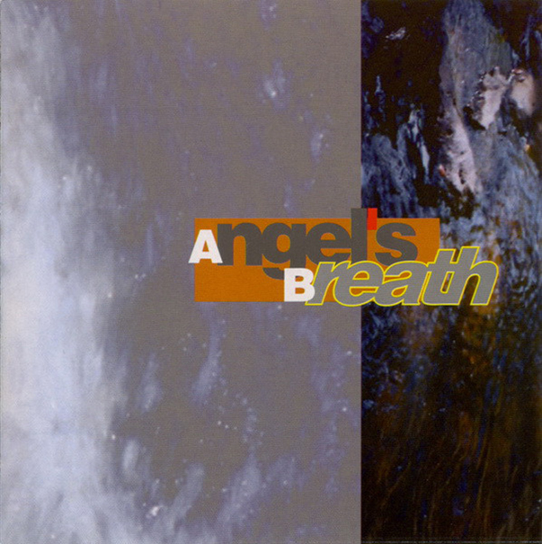

Diskografija
Šarlo akrobata
- „Paket aranžman“ Razni izvođači (Jugoton, 1981.) - učešće
- „Bistriji ili tuplji čovek biva kad...“ (Jugoton, 1981.)
Katarina II
- „Katarina II“ 1984.
Ekatarina Velika
- „Ekatarina Velika“ 1985.
- „S' vetrom uz lice“ 1986.
- „Ljubav“ 1987.
- „Samo par godina za nas“ 1989.
- „Dum dum“ 1991.
- „Neko nas posmatra“ 1993.
Rimtutituki
- „Slušaj 'vamo“ (Radio B92, 1992.)
Angel's Breath • „Angel's Breath“ (Imago Records, 1994.) - Milan Mladenović i Mitar Subotić Suba
